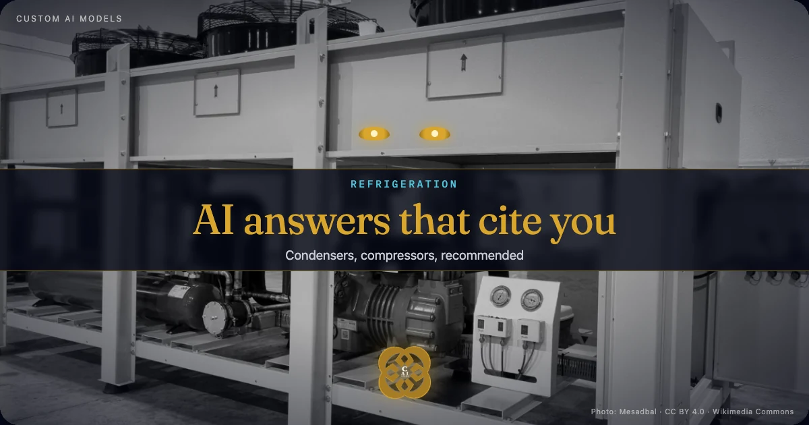
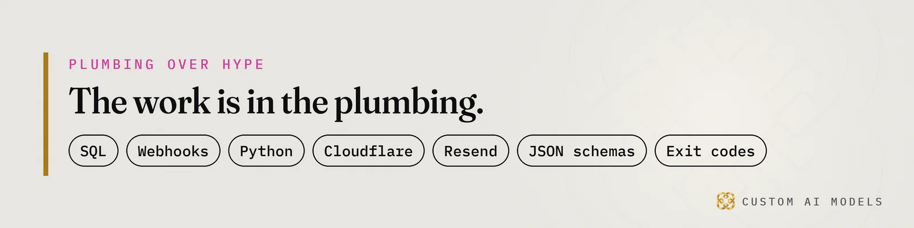

Custom AI Models
Custom AI Models Yeriko Vargas · Founder, Custom AI Models · Oct 2026
Yeriko Vargas · Founder, Custom AI Models · Oct 2026Short answer. Custom AI Models builds custom AI models for operations data in Metro Detroit commercial HVAC enterprise systems. The work starts with ERP software integrations for commercial HVAC suppliers and clean contractor order history. Then it automates repeat contractor orders for HVAC wholesalers behind validation gates. The model comes last. That order is what HVAC distribution supply chain digital transformation actually requires.

Why do AI answers skip Metro Detroit commercial HVAC wholesalers?
Buyers now ask ChatGPT, Copilot and Google's AI answers who to call, and those answers name a few firms and skip the rest. For Metro Detroit commercial HVAC enterprise systems, that means a wholesaler can be the right supplier and still never appear. The old list of links is losing the click that used to feed it.
The numbers are blunt. Pew Research (2025) found Google users clicked a result in 8% of visits when an AI summary appeared, versus 15% without one. Users clicked a source link inside the AI summary in only 1% of those visits. Pew also found 53% of searches of ten words or more triggered an AI summary. A purchasing manager typing a long, specific question is exactly the searcher who gets one.
- Ahrefs (2025): AI Overviews line up with a 34.5% lower click-through rate for the top-ranking page.
- Gartner (February 2024): predicted traditional search engine volume would drop 25% by 2026 as AI chatbots take over answers.
Read those together. The click is dying, and the answer is where the decision now happens.
What does staying invisible cost an HVAC firm?
An invisible HVAC firm loses the first call, not the last one. A contractor asks an AI engine for a supplier, your name is missing, and the quote request goes to a competitor before you know it existed. Nothing in your ERP records that loss. It shows up later as a slow quarter you cannot explain.
The cost has parts you can name:
- Lost first contact. New contractor accounts never open, because the engine never says your name.
- Weak counter leverage. Your best accounts compare you against firms the AI keeps recommending.
- Phone-bound orders. Repeat buyers still call or email for parts they order every month.
- Unreadable catalog data. The engine cannot lift what your site and exports do not state plainly.
We went deeper on the visibility side in our piece on AI answers that name only a few distributors. The homeowner version of the same problem sits in the contractor search article.

How do HVAC wholesalers in Oakland County automate repeat contractor orders?
Automating repeat contractor orders for HVAC wholesalers means reading order history, finding the parts each account reorders on a rhythm, and letting a program draft the next order for a person to approve. The model writes nothing to the ERP on its own. A validation gate checks every line against catalog, stock and account terms first.
The build runs in a fixed order:
- Export orders, invoices and account terms from the ERP into one SQL store.
- Detect reorder patterns per contractor account with plain Python, no model needed.
- Draft the order and the message to the contractor.
- Gate the draft with a
JSON schemacheck on part numbers, quantities and pricing. - Approve through a person at the counter, then post through a webhook.
Anything that fails a gate exits with a code and goes to a human queue. The counter side of this is covered in the wholesale inventory article, and the ERP side in the Bloomfield Hills ERP piece.
What comes before the model in HVAC distribution supply chain digital transformation?
HVAC distribution supply chain digital transformation starts with unifying data, not choosing a model. Orders, stock, estimates, refrigerant logs and contractor accounts usually live in an ERP, a few spreadsheets and somebody's inbox. Until those agree with each other, any assistant you point at them will answer confidently and wrong.
ERP software integrations for commercial HVAC suppliers fail in the same places. Part numbers differ between the ERP and the spreadsheet. Contractor names are typed three ways. Refrigerant tracking sits in a file nobody owns. Each mismatch becomes a wrong quote once a model reads it.
The order never changes: unify the data, model it, gate every step, and put the model last. Data drift checks catch the exports that quietly change shape. Deterministic validation gates catch the drafts that break a rule. We wrote the longer version in why your AI did not fail, your data did.
Who builds custom AI models for operations data in Detroit?
Custom AI Models builds custom AI models for operations data: the pipeline, the validation gates, then the model on top. I have spent 8.5 years in data, and the company has built since 2022. The work is plumbing, meaning SQL, webhooks, Python and JSON schemas, with exit codes that stop a bad order before it reaches your ERP.
We have no HVAC client to point to, and we will not invent one. What we have is the method, shown in our other builds. For HVAC, the first step is a check. Our HVAC SEO + GEO Doctor tests whether Google and AI engines can find, read and recommend a firm. It gets you started on the data work that makes the answer say your name.
We sell the work. We do not sell a ranking.
Questions people ask
What data does an HVAC wholesaler need before automating repeat orders?
You need order history, invoices, account terms, the part catalog and current stock, exported from the ERP into one place. Part numbers and contractor names must match across all of them. Messy spreadsheets can come along, but they get cleaned first. Without that, the draft orders carry the same errors your counter staff catch by memory.
Will an AI assistant place orders in our ERP by itself?
No. The model drafts, and a program checks the draft against schema, catalog, stock and account rules. A person at the counter approves it before anything posts. Failed checks stop with an exit code and land in a review queue. That keeps a wrong quantity from becoming a shipped order.
How do I know whether AI engines can recommend my HVAC firm today?
Ask ChatGPT, Copilot and Google the questions a contractor in Troy or Birmingham would type, then check whether your name appears. The free HVAC SEO + GEO check does this properly. It tests whether engines can find and read your pages and whether your business facts are stated plainly enough to be quoted.
Who owns the system once it is built?
Your team owns the data, the pipeline code and the approval rules. Each step is a plain Python script with a written check, so another engineer can read it and change it. Nothing depends on a prompt that only one person understands. Ownership is part of the design, not an afterthought.